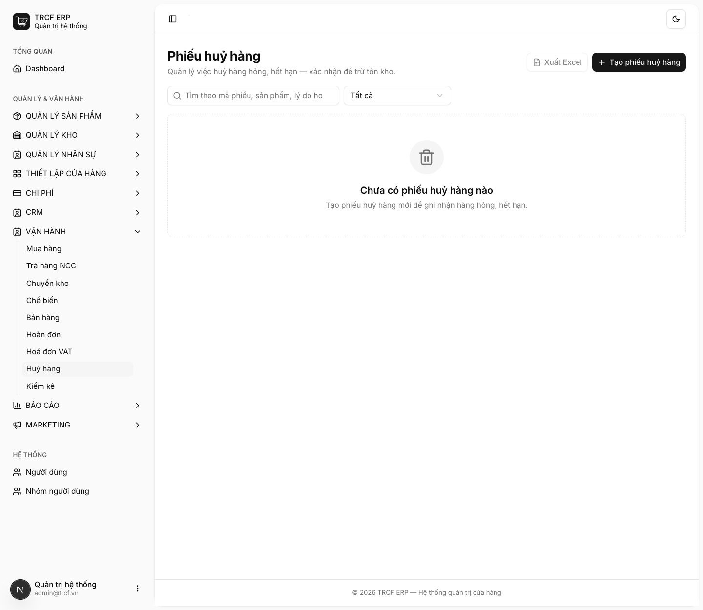
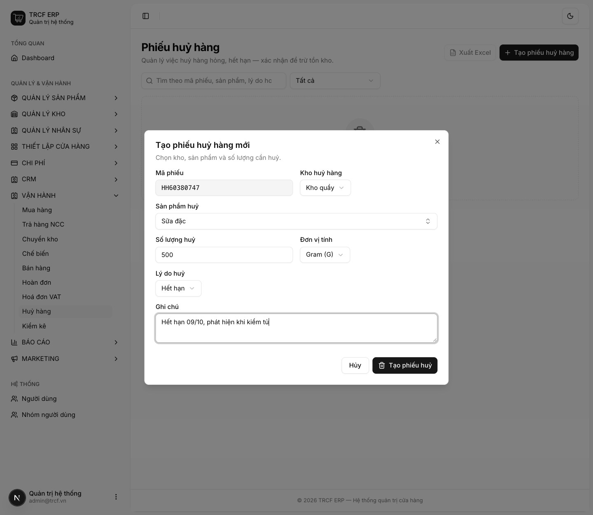
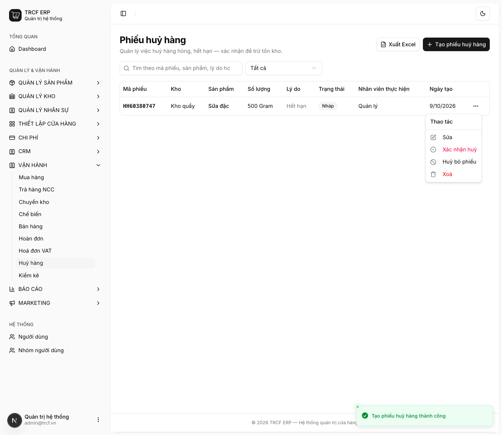

Chương 6 · Chi tiết các nghiệp vụ kho
6.5 Nhập liệu hỏng huỷ
1. Đường dẫn vào chức năng
Menu trái: Vận hành → Huỷ hàng (địa chỉ /scraps).
- Dùng khi: hàng hỏng, hết hạn, rơi vỡ, pha hỏng phải bỏ.
- Mỗi phiếu một mặt hàng. Huỷ ba thứ thì lập ba phiếu.
2. Ví dụ nền và các bước thực hiện
Ví dụ: phát hiện 500 g "Sữa đặc" hết hạn trong tủ ở "Kho quầy".
- Sản phẩm: "Sữa đặc". Số lượng: "500" "Gram".
- Lý do: "Hết hạn". Ghi chú: "Hết hạn 09/10, phát hiện khi kiểm tủ".
Bước 1Mở trang Huỷ hàng
- Bấm Vận hành ở menu trái, chọn Huỷ hàng.
- Bấm Tạo phiếu huỷ hàng.

Bước 2Khai phiếu huỷ
- Mã phiếu: hệ thống tự sinh, không sửa.
- Kho huỷ hàng: chọn "Kho quầy".
- Sản phẩm huỷ: chọn "Sữa đặc".
- Số lượng huỷ: nhập "500". Đơn vị tính: chọn "Gram (G)".
- Lý do huỷ: chọn "Hết hạn" (có 4 lựa chọn: Hỏng / vỡ, Hết hạn, Thất lạc, Khác).
- Ghi chú: nhập "Hết hạn 09/10, phát hiện khi kiểm tủ".
- Bấm nút Tạo phiếu huỷ.

Bước 3Xác nhận huỷ
- Phiếu hiện trong danh sách, trạng thái Nháp.
- Bấm nút … cuối dòng.
- Menu có: Sửa, Xác nhận huỷ, Huỷ bỏ phiếu, Xoá.
- Kiểm tra lại, chọn Xác nhận huỷ.

3. Giải thích các trường
| Trường | Điền gì | Bắt buộc |
|---|---|---|
| Kho huỷ hàng | Kho trừ hàng ra | ✅ |
| Sản phẩm huỷ | Mặt hàng bị huỷ | ✅ |
| Số lượng huỷ | Số bị huỷ | ✅ |
| Đơn vị tính | Đơn vị của số lượng | ✅ |
| Lý do huỷ | Chọn: Hỏng / vỡ, Hết hạn, Thất lạc, Khác | ✅ |
| Ghi chú | Càng cụ thể càng tốt: "hết hạn 09/08", "làm rơi khi bưng" | — |
Huỷ món pha sẵn
- Huỷ món có công thức dạng Kit (VD ly trà đã pha hỏng): hệ thống trừ nguyên liệu theo công thức.
- Không trừ "ly trà", vì trong kho không có mặt hàng "ly trà đã pha".
4. Lưu ý quan trọng
⚠️
Đã xác nhận thì không sửa, không xoá.
💡
Ghi lý do tử tế là phần có giá trị nhất của phiếu huỷ.
- Cuối tháng nhìn lại sẽ thấy hao hụt nằm ở đâu.
- Hết hạn: mua nhiều quá. Rơi vỡ: thao tác. Pha hỏng: đào tạo.
💡
Đừng gộp hao hụt vào phiếu kiểm kho.
- Kiểm kho chỉ nói "thiếu 2 kg".
- Phiếu huỷ nói "thiếu vì sao".
💡
Phiếu Nháp chưa đụng gì tới kho, xoá thoải mái.